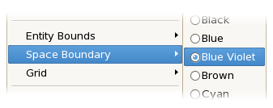

For example the following image illustrates selecting the Blue Violet colour underneath the Space Boundary menu item.

The following list describes how a colour selection will effect the GUI rather than reiterate the choices available.
The ID of the CellApp the cell exists on.
IP Address
The IP Address of the CellApp the cell exists on.
Cell Load
The load of the cell. 0 being not loaded at all, 1 representing 100% load.
Partition Load
The average load of the child nodes of the partition boundary.
Entity Bounds
An internal cell boundary representing the real entities on the cell that will not be offloaded in the next tick. This indicates the location that a partition boundary can move to in order to accept load on the cell.
This boundary is effected by the bw.xml option
balance/maxCPUOffload.
Space Boundary
The outer boundary of the space geometry mapping.
Grid
The background grid representing the chunks that are loaded in a cell.
Ghost Entity
The colour of entities being ghosted (i.e., non-real) on the currently selected cell.
Cell Boundary
The parition lines for all cells within the space.
Relative Colouring (Ctrl R)
This option toggles whether to display the load of cells within the space coloured relatively to each other with the most loaded cell being bright red and the least loaded being light blue.